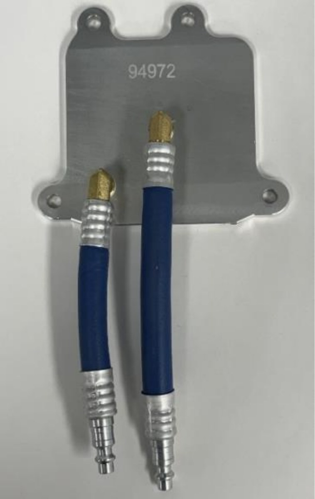
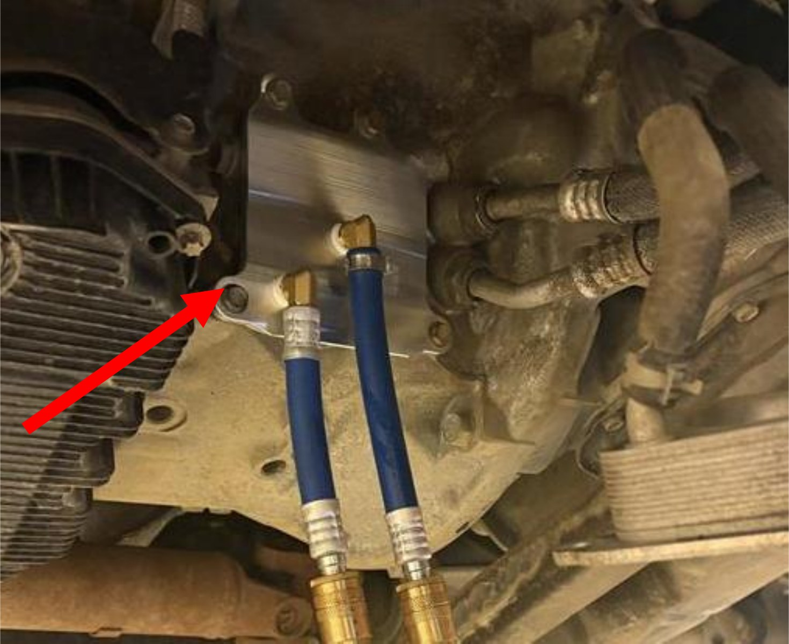

Doc no. MOC-TSB-26-04 // Vol. 26 No. 04 // Oct 7, 2026 // Transmission
Nissan 9-Speed ATF Adapter
New94972
A new transmission adapter for Nissan 9-speed transmissions. It connects directly to the transmission in two steps.
What's new
- Remove the external cooler from the transmission.
- Bolt the adapter directly to the transmission with the same 4 bolts that secure the cooler.
Key benefits
- Fast installation and removal
- Uses the existing transmission mounting hardware
- Reliable connection point for fluid exchange services
- Less setup time, more efficient service
Contact
For more information, contact the Machine & Equipment Department at 866.244.6621.


Part numbers
| Part No. | Description | Notes |
|---|---|---|
| 94972 | Adapter, ATF, Nissan 9-Speed | Nissan 9-speed |